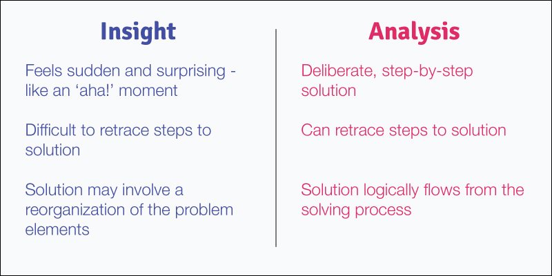
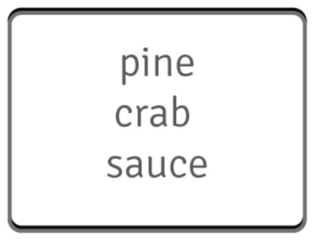
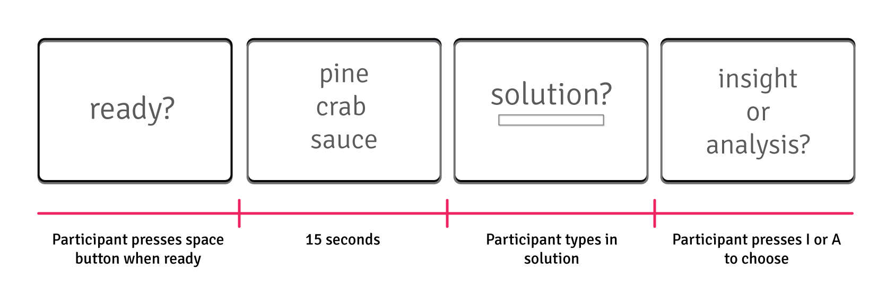
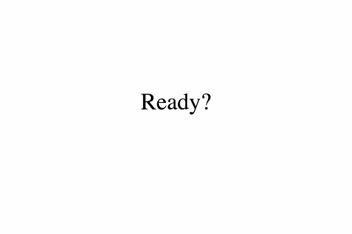

Challenge
The Creative Brain Lab, a cognitive neuroscience lab at Northwestern University, wanted to find a way to reach a more diverse population of participants and shorten research study timelines. Since online testing was a natural solution, I helped develop an experiment that could be run via web server. This required that I combine my skills from the DESIGNATION program with my professional research experience to create a useful tool that would help the lab reach broader populations and acquire data more quickly.
Background
Research in the Creative Brain Lab focuses on the behaviors, mental processes, and brain structures associated with creative problem solving. Specifically, the difference between solving a problem in a sudden moment of insight, like an ‘aha! moment', and solving a problem with a gradual, analytic process. To do this, I created an online version of an experimental paradigm that the director of the lab, Dr. Mark Beeman, co-created.
As a first step, we chose to replicate the original study to verify the experiment worked similarly in an online environment compared to being run in-person in the lab. This model will serve as an important template that can be easily adapted to test novel hypotheses online.
What is insight?
When solving a problem, an insight experience occurs when the solution comes to you in a sudden and surprising way. In contrast, analytic solving employs a gradual part-by-part process where the solution is reached after using a strategy.
In our experiments, we acknowledge that it can be difficult for participants to choose which process they used. Therefore, we advise participants to choose the method that most closely resembles their process.
What affects insight?
Previous work in the lab focuses on behaviors that affect problem solving by insight. Some examples include:
Mood
Participants in a positive mood solve more problems compared to participants in a negative mood and the solutions are more likely to occur by insight (Subramaniam et al., 2009).
Attention
Participants in a narrow, focused state of attention solve more problems by analysis while participants in an broad, open state of attention solve more problems by insight (Wegbreit et al., 2012).
So what?
Insight problem solving lies at the heart of innovation. Since we know certain exercises and experiences can affect which solving process - insight or analysis - people use, we are interested in studying what other experiences may influence insight solving or what behaviors may follow insight solving. These have profound implications for the classroom and workplace.
By developing an online experiment that can be run via web server, I created a template that future studies can adapt to study novel questions about creative problem solving. Consequently, this streamlined lab procedures, shortened study timelines, reduced the cost of running experiments, and enabled the lab to investigate novel hypotheses.
Study Design
Why word problems?
The study of creative problem solving is a complex endeavor. To make it easier, the Principal Investigator of the lab, Dr. Mark Beeman, co-developed a problem set of word problems that have an equal tendency to be solved via insight or analysis.
Participants are instructed to find a single word that forms a common compound word or phrase with each of the three problem words. For example, what word completes the three words below?
The answer is apple because it completes each word to form the following compound words and/or phrases: ‘pine apple’ ‘crabapple’ and ‘apple sauce.’
Study Outline
The timeline below exemplifies what one trial looks like. This study includes 100 such trials; the reason this number is high is because, on average, participants solve about 40% of the problems presented, so we need to ensure that we get enough data from each participant. Once we replicate our findings with the basic paradigm, we will posit different hypotheses and alter the code.
This is the timeline of a single experimental trial. If a participant does not press the space bar to indicate he/she solved the problem, the program will move to the next trial and present the next problem.
What data are important?
The script needed to collect data on the time taken to solve the problem (reaction time), whether the answer was correct, how each problem was solved (insight or analysis), and how long participants spent on the ‘ready’ screen preparing for the problem.

The data points we are interested in analyzing, and therefore made sure the script recorded accurately, are listed below each screen in the sample trial above.
Error Handling
Because this is an online experiment, the script needs to keep track of participant behaviors that we cannot control. For example, whether someone navigated away from the page during the experiment; whether a participant stayed on a ‘ready?’ screen for a long period of time (eg 10 min or greater), indicative of distraction; or ensure that there were no repeat participants (someone couldn’t do the experiment twice).
Development
With the experimental design clarified, I acquired a sample script from another lab in the Psychology Department. The sample script implemented a very different experimental design so, while it was a good starting point, it was a challenge to adapt to our needs. In the process, however, I learned how to make sense of a new codebase, understand how it works with the server, and adapt it for the needs of the lab. I’m happy to discuss the code and answer questions upon request (nec’y?).
This is what a participant experiences as they go through a couple trials. In the experiment, this would happen over the course of a hundred trials, with three opportunities for breaks.
Limitations
We recognize that the data we collect online have limitations: we don’t know if participants are focused on each experimental trial, if they misunderstood instructions, or if they experienced other challenges that impeded their performance.
While this data should be carefully considered, we hope to parse out the signal from the noise with a large enough sample size. To make this process easier, I built some checks that are recorded in the data output. For example, if a participant spends longer than 30 seconds on the solution screen, or if they spend more than a minute on the solving method or ready screens, those trials are flagged in the data. While we won't automatically discard these trials, we will examine them to see if they are representative of the problem solving experience or if the participant became disengaged.
Future Directions
The purpose of this project was to create a script that can be easily adapted by all lab members to conduct future experiments. It will be an efficient way to gather preliminary behavioral data for studies that require massive resources, such as fMRI studies (lots of personnel, high cost, etc.) and will serve as an efficient and cost-effective way to gather large amounts of behavioral data from diverse populations. We intend to begin using this tool in Summer 2016.
Here are some of the ways we envision adapting the script:
Visual Problems
We are currently developing a visual problem set and will use this script to pilot those images. As a result, I used the html canvas element so that pictures could be rendered quickly and easily.
Risk & Reward
How does rewarding participants affect their performance? How do participant behaviors change if they have to bet money on whether or not they will solve the upcoming problem? The script is capable of giving feedback and displaying reward values based on participants’ performance.
Performance Pressure
How does performance pressure affect solving rates? Do participants solve more problems by analysis or insight if they are under pressure? The script is modular so that experimental manipulations (such as inducing performance pressure) may be added before or after the problem solving task.
Future Directions
This was an excellent opportunity for me to combine my research experience with the coding skills I developed at DESIGNATION. I learned a great deal about adapting a script from someone else’s code: at first, it was difficult for me to create something within the old script’s parameters, but once I learned them well, I found solutions to my problems. It was a significant coding challenge to keep the script as broad as possible so that modifications - such as visual problems, performance feedback, or more screens per trial - could be included in the future.
Integrating my psychology research knowledge with my coding skills was stimulating and exciting; there’s nothing like using my skills to work toward a goal I’m passionate about. I hope to use this experience to inform which projects I take on in the future.